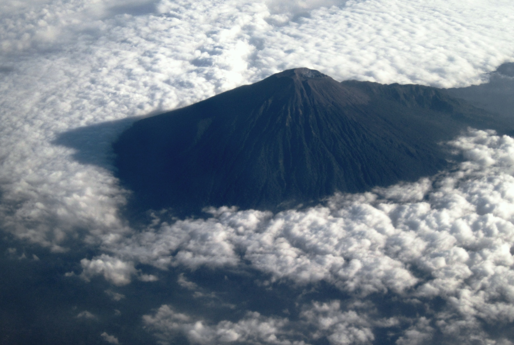
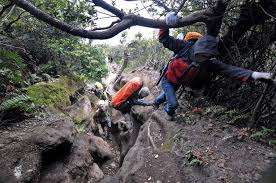

Sebagaimana gunung api lainnya di Pulau Jawa, Gunung Slamet terbentuk akibat subduksi Lempeng Indo-Australia pada Lempeng Eurasia di selatan Pulau Jawa. Retakan pada lempeng membuka jalur lava ke permukaan.Catatan letusan diketahui sejak abad ke-19. Gunung ini aktif dan sering mengalami erupsi skala kecil. Aktivitas terakhir adalah pada bulan Mei 2009 dan sampai Juni masih terus mengeluarkan lava pijar. Sebelumnya ia tercatat meletus pada tahun 1999.
Maret 2014 Gunung Slamet menunjukkan aktifitas dan statusnya menjadi Waspada.Berdasarkan data PVMBG, aktivitas vukanik Gunung Slamet masih fluktuatif. Setelah sempat terjadi gempa letusan hingga 171 kali pada Jumat 14 Maret 2014 dari pukul 00.00-12.00 WIB, pada durasi waktu yang sama,tercatat sebanyak 57 kali gempa letusan. Tercatat pula 51 kali embusan. Pemantauan visual, embusan asap putih tebal masih keluar dari kawah gunung ke arah timur hingga setinggi 1 km.
Untuk lebih lengkapnya mengenai Gunung Slamet, silahkan buka: Gunung Slamet

Gunung Slamet memiliki cerita legenda yang turun temurun. Nama slamet diambil dari bahasa Jawa yang artinya selamat. Nama ini diberikan karena dipercaya gunung ini tidak pernah meletus besar dan memberi rasa aman bagi warga sekitar. Menurut kepercayaan warga sekitar, bila Gunung Slamet sampai meletus besar maka Pulau Jawa akan terbelah menjadi dua bagian.
Jalur Pendakian standar adalah dari Blambangan, Desa Kutabawa,Kecamatan Karangreja, Purbalingga. Jalur populer lain adalah dari Baturraden dan dari Desa Gambuhan, Desa Jurangmangu dan Desa Gunungsari di Kabupaten Pemalang.Selain itu ada pula jalur yang baru saja diresmikan tahun 2013 lalu, yaitu jalur Dhipajaya yang terletak di Kabupaten Pemalang.Pendakian Gunung Slamet dikenal cukup sulit karena hampir di sepanjang rute pendakian tidak ditemukan air. Pendaki disarankan untuk membawa persediaan air yang cukup dari bawah. Faktor penyulit lain adalah kabut. Kabut di Gunung Slamet sangat mudah berubah-ubah dan pekat. Jalur pendakian lainnya adalah melalui objek wisata pemandian air panas Guci, Kabupaten Tegal.Meskipun terjal, rute ini menyajikan pemandangan yang paling baik.Kawasan Guci dapat ditempuh dari Slawi menuju daerah Tuwel melewati Lebaksiu.
Peta Pendakian
>>>